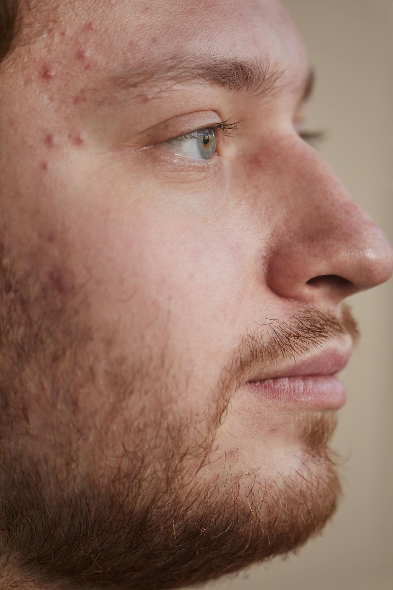

Post-Inflammatory Erythema Explained by An Esthetician

Hadiyah Daché, licensed cosmetologist & esthetician
Acne Scars
3 min
← All articlesThe Book →Friendly reminder: this post contains affiliate links, which help support the Glowdega Archive. If you buy through them, I may earn a commission at no extra cost to you.
While everyone seems to be hyper-aware of hyperpigmentation, there's a little bit more mystery around Post-Inflammatory Erythema (PIE). Is it just redness or could it be something more? And how is it not Post-Inflammatory Hyperpigmentation (PIH)? The two can be a bit confusing and are often conflated. This post will explain the differences to help you better understand what you see happening on your skin.
Whole Lotta Red
Post-Inflammatory Erythema is a relatively new medical term that was coined in 2013. PIE describes the unique, residual redness that appears after inflammation—like an acne lesion—has been present on the skin. In lighter complexions, PIE presents as pink, red, or purplish discoloration. And instead of being a melanin response, PIE is a vascular response. What this means is that the redness we see with PIE is a result of capillary damage or dilation. This differs from general erythema and telangiectasia because those will typically result in larger red patches across the face whereas PIE will be a little more centralized over where the trauma was present only. Almost all lighter complexions (Fitzpatrick scale 1-3) will experience post-inflammatory erythema from acne lesions.
How Post-Inflammatory Erythema and Post-Inflammatory Hyperpigmentation are Different
You can tell if you have PIE by the size of redness (usually equal to or less than the size of your breakout or trauma area) and the pressure test which is sometimes called "skin blanching". I don't like the term "skin blanching" however because it is something we look for during the chemical peel process and is totally different.
To conduct a pressure test, you want to take a clear material (like a microscope slide) and place over the area you think may be PIE then press down firmly. If the redness immediately disappears which restores your natural skin color, then it is likely you have PIE. Once you remove pressure, the redness will return.
Post-Inflammatory Hyperpigmentation, on the other hand, has no quick test. It appears as brownish-reddish to dark brown-purple spots in the area where trauma has occurred and will primarily occur in Fitzpatrick types 4-6.
And this is where I have a different professional take on PIE. Most of the literature that exists on PIE seem to lean too heavy on the distinction between complexion when it comes to diagnosing PIE vs. PIH. I disagree with this. Since PIE is vascular, it is possible for those with deeper complexions to still experience this. Vascular responses in deeper skin tones just may not appear as red so it is still important to know and understand the differences for ALL skin tones. It is also possible for someone to experience both PIE and PIH at the same time.
The Best Treatments for PIE
Treating post-inflammatory erythema mainly involves patience and a simple skin care routine. Most instances of PIE will clear on their own within a few months time. However, for those who have experienced chronic PIE for an extended amount of time there are some slightly invasive treatment options to help clear your skin quicker.
There are two types of lasers that are effective at minimizing and clearing PIE: intense pulsed light (IPL) and pulsed dye. During these treatments, the lasers actually break up the damaged blood vessels which improves the overall appearance. Chemical peels are also an option for quickly addressing PIE.
To help reduce redness in your everyday routine, look for calming products with azelaic acid.